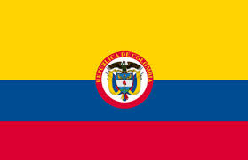

Cristian Moisés De La Hoz Escorcia
About Me
My name is Cristian De La Hoz. I was born in Barranquilla, Colombia, 62 years ago, but I've lived in Bogotá, Colombia, since 1991. I'm married to Yustin De La Hoz, and we'll be celebrating our ruby wedding anniversary (40 years) on January 11th. We have three children and eight grandchildren. I love cycling and playing the piano and flute in my free time. I retired this year, and my short-term goal is to get a bachelor's degree in Software Development.
Bogotá, Colombia
Official Flag of Colombia
Colombia is a country located in the northwestern part of South America. It is known for its diverse culture, rich history, and beautiful landscapes, including the Andes mountains, Amazon rainforest, and Caribbean coast.